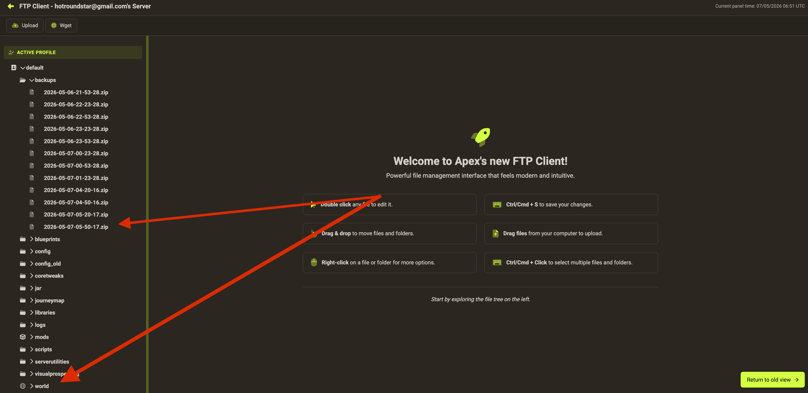

Важно перед началом: восстановление перезапишет текущий мир. Если на сервере есть свежий прогресс, который ещё не в бэкапе, сначала сохрани его (сделай ручной бэкап в разделе Backups).
1 Остановить сервер
Зайди в панель Apex и в разделе Server Management → Console нажми Stop. Дождись, пока сервер полностью выключится — статус должен стать «Offline». Восстанавливать файлы на работающем сервере нельзя: Minecraft перезапишет их при следующем сохранении.
2 Открыть FTP File Access
В левой колонке панели разверни блок File Management и нажми FTP File Access.
В дереве файлов слева открой папку backups. Бэкапы названы по дате и времени в формате ГГГГ-ММ-ДД-ЧЧ-ММ-СС.zip. Выбирай самый свежий до момента, когда всё пошло не так.

Список бэкапов в папке backups/ и папка world/ внизу дерева
Подсказка: в названии файла время указано в UTC (см. Current panel time в правом верхнем углу). Учитывай разницу с Москвой — обычно −3 часа.
4 Распаковать архив бэкапа
Кликни правой кнопкой мыши по нужному zip-файлу.
В меню выбери Unarchive (или Extract).
Дождись, пока появится новая папка с тем же именем, что и архив (например 2026-05-07-05-50-17/). На крупных мирах это занимает 1–3 минуты.
Зайди внутрь распакованной папки — там должна быть папка world (а также world_nether, world_the_end, если используешь Vanilla/Paper).
5 Заменить папку world в корне
Вернись в корень default/ (самый верх дерева).
Переименуй текущую папку world в world_old — это страховка на случай, если бэкап окажется не тем.
Перетащи папку world из распакованного бэкапа в корень default/. Если есть папки world_nether и world_the_end — перенеси их тоже (точно так же, переименовав старые в _old).
Альтернатива: если в Apex меню есть пункт Move to root при правом клике по папке внутри бэкапа — пользуйся им, это надёжнее, чем drag & drop.
6 Запустить сервер и проверить
Возвращайся в Console и жми Start.
В логе следи за строкой Done (Xs)! For help, type "help" — значит мир загрузился без ошибок.
Зайди на сервер и проверь: постройки, игроков, инвентари. Если всё ок — удали папки world_old (и пары к ним) через FTP.
Распакованную папку с архивом тоже можно удалить, чтобы не занимала место.
Если что-то пошло не так
Сервер не стартует, в логе ошибка про мир — останови сервер, удали новый world, переименуй world_old обратно в world, попробуй другой бэкап.
Распаковка зависла — обнови страницу FTP, проверь, не появилась ли уже папка. Apex иногда не показывает прогресс, но процесс идёт.
Архив слишком большой и Unarchive не работает — скачай zip на компьютер через правый клик → Download, распакуй локально, загрузи папку world обратно через Upload или SFTP-клиент (FileZilla).
Хочешь восстановить только один регион / постройку — распакуй бэкап, открой world/region/, скопируй нужный .mca-файл поверх текущего (имя файла привязано к координатам чанков).